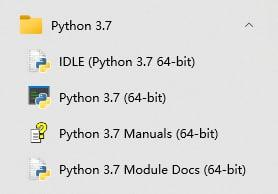

Python 速成
关于 Python¶
Python 是一种目前已在世界上广泛使用的解释型面向对象语言，非常适合用来测试算法片段和原型，也可以用来刷一些 OJ。
为什么要学习 Python¶
- Python 是一种 解释型 语言：类似于 PHP 与 Perl，它在开发过程中无需编译，即开即用，跨平台兼容性好。
- Python 是一种 交互式 语言：您可以在命令行的提示符
>>>后直接输入代码，这将使您的代码更易于调试。 - Python 易学易用，且覆盖面广：从简单的输入输出到科学计算甚至于大型 WEB 应用，Python 可以帮助您在 极低的学习成本 下快速写出适合自己的程序，从而让您的程序生涯如虎添翼，为以后的学习和工作增加一项实用能力。
- Python 易读性强，且在世界广泛使用：这意味着您能够在使用过程中比其他语言 更快获得支持，更快解决问题。
- 哦，还有一个最重要的：它在各平台下的环境易于配置，并且目前市面上大部分流行的 Linux 发行版（甚至于
NOI Linux）中也大都 内置 了个版本比较旧的 Python，这意味着您能真正在考场上使用它，让它成为您的最佳拍档。
学习 Python 时需要注意的事项¶
- 目前的 Python 分为 Python 2 和 Python 3 两个版本，其中 Python 2 虽然 几近废弃，但是仍被一些老旧系统和代码所使用。我们通常不能确定在考场上可以使用的版本。此处 介绍较新版本的 Python。但还是建议读者确认考场环境，了解一下 Python 2 的相关语法，并比较两者之间的差异。
- 如果您之前使用 C++ 语言，那么很遗憾地告诉您，Python 的语法结构与 C++ 差异还是比较大的，请注意使用的时候不要混淆。
- 由于 Python 是高度动态的解释型语言，因此其程序运行有大量的额外开销。尤其是 for 循环在 Python 中运行的奇慢无比。因此在使用 Python 时若想获得高性能，尽量使用
filter,map等内置函数，或者使用 列表生成 语法的手段来避免循环。
环境安装¶
Windows¶
访问 https://www.python.org/downloads/，下载自己需要的版本并安装。 另外为了方便，请务必勾选 Add Python 3.x to PATH 以确保将 Python 加入环境变量！ 如在如下的 Python 3.7.4 安装界面中，应该如图勾选最下一项复选框。

安装完成后，您可以在开始菜单找到安装好的 Python。

此外，您还可以在命令提示符中运行 Python。
正常启动后，它会先显示欢迎信息与版本信息以及版权声明，之后就会出现提示符 >>>，一般情况下如下所示：
1 2 3 4 | $ python3
Python 3.6.4 (v3.6.4:d48eceb, Dec 19 2017, 06:54:40) [MSC v.1900 64 bit (AMD64)] on win32
Type "help", "copyright", "credits" or "license" for more information.
>>>
|
这就是 Python 的 IDLE。
何谓 IDLE？
Python 的 IDE，“集成开发与学习环境”的英文缩写。是 Python 标准发行版附带的基本编程器和解释器环境。在其他 Python 发行版（如 Anaconda）中还包含 IPython，Spyder 等更加先进的 IDE。
额外地，可以在 Microsoft 商店 免费获取 Python。
macOS/Linux¶
通常情况下，正如上文所说，大部分的 Linux 发行版中已经自带了 Python，如果您只打算学学语法并无特别需求，一般情况下不用再另外安装。通常而言，在 Linux 终端中运行 python2 进入的是 Python 2，而运行 python3 进入的是 Python 3。
而由于种种依赖问题（如 CentOS 的 yum )，自行编译安装后通常还要处理种种问题，这已经超出了本文的讨论范畴。可以使用 venv、conda、Nix 等工具来管理 Python、Python 工具链和 Python 软件包，避免出现依赖问题。
而在这种情况下您一般能直接通过软件包管理器来进行安装，如在 Ubuntu 下安装 Python 3：
1 | sudo apt install python3
|
更多详情您可以直接在搜索引擎上使用关键字 系统名称(标志版本) 安装 Python 2/3 来找到对应教程。
运行 python 还是 python3 ？
根据 Python 3 官方文档 的说法，在 Unix 系统中，Python 3.X 解释器 默认安装（指使用软件包管理器安装）后的执行文件并不一定叫作 python，以免与可能同时安装的 Python 2.X 冲突。同样的，默认安装的 pip 软件也是类似的情况，Python 3 包管理器的文件名为 pip3。python 这个名字指向 python2 还是 python3 则视系统和系统版本确定。所以，当使用 Python 3 有关的时，请使用 python3 和 pip3 以确保准确，同理，Python 2 最好使用 python2 和 pip2。
关于镜像和 pip¶
目前国内关于 源码 的镜像缓存主要是 北京交通大学 和 华为开源镜像站 在做，如果您有下载问题的话可以到那里尝试一下。
如果您还有使用 pip 安装其他模块的需求，请参照 TUNA 的镜像更换帮助。
pip 是什么？
Python 的默认包管理器，用来安装第三方 Python 库。它的功能很强大，能够处理版本依赖关系，还能通过 wheel 文件支持二进制安装。pip 的库现在托管在 PyPI（即“Python 包索引”）平台上，用户也可以指定第三方的包托管平台。
关于 PyPI 的镜像，可以使用如下大镜像站的资源：
- 清华大学 TUNA 镜像站
- 中国科学技术大学镜像站
- 豆瓣的 PyPI 源
- 华为开源镜像站
- 针对教育网内的镜像站，您可以在 MirrorZ 上查看更多详情。
基本语法¶
Python 以其简洁易懂的语法而出名。它基本的语法结构可以非常容易地在网上找到，例如 菜鸟教程 就有不错的介绍。这里仅介绍一些对 OIer 比较实用的语言特性。
关于注释¶
鉴于后文中会高频用到注释，我们先来了解一下注释的语法。
1 2 3 4 5 6 7 | # 用 # 字符开头的是单行注释
""" 跨多行字符串会用三个引号
包裹，但也常被用来做多
行注释. (NOTE: 在字符串中
不会考虑缩进问题)
"""
|
加入注释代码并不会对代码产生影响。我们鼓励加入注释来使您的代码更加易懂易用。
基本数据类型与运算¶
有人说，你可以把你系统里装的 Python 当作一个多用计算器，这是事实。
你可以在提示符 >>> 后面输入一个表达式，就像其他大部分语言（如 C++）一样使用运算符 +、-、*、/ 来对数字进行运算；还可以使用 () 来进行符合结合律的分组，例如：
1 2 3 4 5 6 7 8 9 10 11 12 13 14 15 16 17 18 19 | >>> 233 # 整数就是整数
233
>>> 5 + 6 # 算术也没有什么出乎意料的
11
>>> 50 - 4 * 8
18
>>> (50 - 4) * 8
368
>>> 15 / 3 # 但是除法除外，它会永远返回浮点 float 类型
5.0
>>> (50 - 4 * 8) / 9
2.0
>>> 5 / 3
1.6666666666666667
>>> 5.0 * 6 # 浮点数的运算结果也是浮点数
30.0
|
整数（比如 5、8、16）为 int 类型，有小数部分的（如 2.33、6.0）则为 float 类型。随着更深入的学习，你可能会接触到更多的类型，但是在速成阶段这些已经足够使用。
在上面的实践中也可以发现，除法运算（/）永远返回浮点类型（在 Python 2 中返回整数）。如果你想要整数或向下取整的结果的话，可以使用整数除法（//)。同样的，你也可以像 C++ 中一样，使用模（%）来计算余数。
1 2 3 4 5 6 7 8 9 10 11 12 | >>> 5 / 3 # 正常的运算会输出浮点数
1.6666666666666667
>>> 5 // 3 # 使用整数除法则会向下取整，输出整数类型
1
>>> -5 // 3 # 符合向下取整原则，注意与C/C++不同
-2
>>> 5.0 // 3.0 # 如果硬要浮点数向下取整也可以这么做
1.0
>>> 5 % 3 # 取模
2
>>> -5 % 3 # 负数取模结果一定是非负数，这点也与C/C++不同，不过都满足 (a//b)*b+(a%b)==a
1
|
特别的，Python 封装了乘方（**）的算法，还通过内置的 pow(a, b, mod) 提供了 快速幂 的高效实现。
同时 Python 还提供大整数支持，但是浮点数与 C/C++ 一样存在误差。
1 2 3 4 5 6 7 8 9 10 | >>> 5 ** 2
25
>>> 2 ** 16
65536
>>> 2 ** 512
13407807929942597099574024998205846127479365820592393377723561443721764030073546976801874298166903427690031858186486050853753882811946569946433649006084096
>>> pow(2, 512, 10000) # 即 2**512 % 10000 的快速实现
4096
>>> 2048 ** 2048 # 在IDLE里试试大整数？
|
输入输出¶
Python 中的输入输出主要通过内置函数 raw_input(Python 2)/input(Python 3) 和 print 完成，这一部分内容可以参考 Python 的官方文档。input 函数用来从标准输入流中读取一行，print 则是向标准输出流中输出一行。在 Python 3 中对 print 增加了 end 参数指定结尾符，可以用来避免 print 自动换行。如果需要更灵活的输入输出操作，可以在引入 sys 包之后利用 sys.stdin 和 sys.stdout 操标准作输入输出流。
另外，如果要进行格式化的输出的话可以利用 Python 中字符串的语法。格式化有两种方法，一种是利用 % 操作符，另一种是利用 format 函数。前者语法与 C 兼容，后者语法比较复杂，可以参考 官方文档。
1 2 3 4 5 6 7 8 9 10 | >>> print(12)
12
>>> print(12, 12) # 该方法在 Python 2 和 Python 3 中的表现不同
12 12
>>> print("%d" % 12) # 与C语法兼容
12
>>> print("%04d %.3f" % (12, 1.2))
0012 1.200
>>> print("{name} is {:b}".format(5, name="binary of 5"))
binary of 5 is 101
|
开数组¶
从 C++ 转过来的同学可能很迷惑怎么在 Python 中开数组，这里就介绍在 Python 开数组的语法。
使用 list¶
主要用到的是 Python 中列表（list）的特性，值得注意的是 Python 中列表的实现方式类似于 C++ 的 vector。
1 2 3 4 5 6 7 8 9 10 11 12 13 14 15 16 17 18 19 20 21 22 23 24 25 26 27 28 29 30 31 32 33 34 | >>> [] # 空列表
[]
>>> [1] * 10 # 开一个10个元素的数组
[1, 1, 1, 1, 1, 1, 1, 1, 1, 1]
>>> [1, 1] + [2, 3] # 数组拼接
[1, 1, 2, 3]
>>> a1 = list(range(8)) # 建立一个自然数数组
>>> a1
[0, 1, 2, 3, 4, 5, 6, 7]
>>> [[1] * 3] * 3 # 开一个3*3的数组
[[1, 1, 1], [1, 1, 1], [1, 1, 1]]
>>> [[1] * 3 for _ in range(3)] # 同样是开一个3*3的数组
[[1, 1, 1], [1, 1, 1], [1, 1, 1]]
>>> a2 = [[1]] * 5; a[0][0] = 2; # 猜猜结果是什么？
>>> a2
[[2], [2], [2], [2], [2]]
>>> # 以下是数组操作的方法
>>> len(a1) # 获取数组长度
8
>>> a1.append(8) # 向末尾添加一个数
>>> a1[0] = 0 # 访问和赋值
>>> a1[-1] = 7 # 从末尾开始访问
>>> a1[2:5] # 提取数组的一段
[2, 3, 4]
>>> a1[5:2:-1] # 倒序访问
[5, 4, 3]
>>> a1.sort() # 数组排序
>>> a2[0][0] = 10 # 访问和赋值二维数组
>>> for i, a3 in enumerate(a2):
for j, v in enumerate(a3):
temp = v # 这里的v就是a[i][j]
|
注意上面案例里提到的多维数组的开法。由于列表的乘法只是拷贝引用，因此 [[1]] * 3 这样的代码生成的三个 [1] 实际上是同一个对象，修改其内容时会导致所有数组都被修改。所以开多维数组时使用 for 循环可以避免这个问题。
使用 NumPy¶
什么是 NumPy
NumPy 是著名的 Python 科学计算库，提供高性能的数值及矩阵运算。在测试算法原型时可以利用 NumPy 避免手写排序、求最值等算法。NumPy 的核心数据结构是 ndarray，即 n 维数组，它在内存中连续存储，是定长的。此外 NumPy 核心是用 C 编写的，运算效率很高。
下面的代码将介绍如何利用 NumPy 建立多维数组并进行访问。
1 2 3 4 5 6 7 8 9 10 11 12 13 14 15 16 17 18 19 20 21 22 23 24 25 26 27 28 29 30 31 32 33 34 35 36 37 | >>> import numpy as np # NumPy 是第三方库，需要安装和引用
>>> np.empty(3) # 开容量为3的空数组
array([0.00000000e+000, 0.00000000e+000, 2.01191014e+180])
>>> np.empty((3, 3)) # 开3*3的空数组
array([[6.90159178e-310, 6.90159178e-310, 0.00000000e+000],
[0.00000000e+000, 3.99906161e+252, 1.09944918e+155],
[6.01334434e-154, 9.87762528e+247, 4.46811730e-091]])
>>> np.zeros((3, 3)) # 开3*3的数组，并初始化为0
array([[0., 0., 0.],
[0., 0., 0.],
[0., 0., 0.]])
>>> a1 = np.zeros((3, 3), dtype=int) # 开3×3的整数数组
>>> a1[0][0] = 1 # 访问和赋值
>>> a1[0, 0] = 1 # 更友好的语法
>>> a1.shape # 数组的形状
(3, 3)
>>> a1[:2, :2] # 取前两行、前两列构成的子阵，无拷贝
array([[1, 0],
[0, 0]])
>>> a1[0, 2] # 获取第1和3列，无拷贝
array([[1, 0],
[0, 0],
[0, 0]])
>>> np.max(a1) # 获取数组最大值
1
>>> a1.flatten() # 将数组展平
array([1, 0, 0, 0, 0, 0, 0, 0, 0])
>>> np.sort(a1, axis=1) # 沿行方向对数组进行排序，返回排序结果
array([[0, 0, 1],
[0, 0, 0],
[0, 0, 0]])
>>> a1.sort(axis=1) # 沿行方向对数组进行原地排序
|
类型检查和提示¶
无论是打比赛还是做项目，使用类型提示可以让你更容易地推断代码、发现细微的错误并维护干净的体系结构。Python 最新的几个版本允许你指定明确的类型进行提示，有些工具可以使用这些提示来帮助你更有效地开发代码。Python 的类型检查主要是用类型标注和类型注释进行类型提示和检查。对于 OIer 来说，掌握 Python 类型检查系统的基本操作就足够了，项目实操中，如果你想写出风格更好的、易于类型检查的代码，你可以参考 Mypy 的文档。
动态类型检查¶
Python 是一个动态类型检查的语言，以灵活但隐式的方式处理类型。Python 解释器仅仅在运行时检查类型是否正确，并且允许在运行时改变变量类型。
1 2 3 4 5 6 7 8 9 | >>> if False:
... 1 + "two" # This line never runs, so no TypeError is raised
... else:
... 1 + 2
...
3
>>> 1 + "two" # Now this is type checked, and a TypeError is raised
TypeError: unsupported operand type(s) for +: 'int' and 'str'
|
类型提示简例¶
我们首先通过一个例子来简要说明。假如我们要向函数中添加关于类型的信息，首先需要按如下方式对它的参数和返回值设置类型标注：
1 2 3 4 5 6 7 8 9 10 | # headlines.py
def headline(text: str, align: bool = True) -> str:
if align:
return f"{text.title()}\n{'-' * len(text)}"
else:
return f" {text.title()} ".center(50, "o")
print(headline("python type checking"))
print(headline("use mypy", align=True))
|
但是这样添加类型提示没有运行时的效果——如果我们用错误类型的 align 参数，程序依然可以在不报错、不警告的情况下正常运行。
1 2 3 4 | $ python headlines.py
Python Type Checking
--------------------
oooooooooooooooooooo Use Mypy oooooooooooooooooooo
|
因此，我们需要静态检查工具来排除这类错误（例如 PyCharm 中就包含这种检查）。最常用的静态类型检查工具是 Mypy。
1 2 3 4 5 | $ pip install mypy
Successfully installed mypy.
$ mypy headlines.py
Success: no issues found in 1 source file
|
如果没有报错，说明类型检查通过；否则，会提示出问题的地方。值得注意的是，类型检查可以向下（subtype not subclass）兼容，比如整数就可以在 Mypy 中通过浮点数类型标注的检查（int 是 double 的 subtype，但不是其 subclass）。
这种检查对于写出可读性较好的代码是十分有帮助的——Bernát Gábor 曾在他的 The State of Type Hints in Python 中说过，“类型提示应当出现在任何值得单元测试的代码里”。
类型标注¶
类型标注是自 Python 3.0 引入的特征，是添加类型提示的重要方法。例如这段代码就引入了类型标注，你可以通过调用 circumference.__annotations__ 来查看函数中所有的类型标注。
1 2 3 4 | import math
def circumference(radius: float) -> float:
return 2 * math.pi * radius
|
当然，除了函数函数，变量也是可以类型标注的，你可以通过调用 __annotations__ 来查看函数中所有的类型标注。
1 2 3 4 | pi: float = 3.142
def circumference(radius: float) -> float:
return 2 * pi * radius
|
变量类型标注赋予了 Python 静态语言的性质，即声明与赋值分离：
1 2 3 4 5 6 | >>> nothing: str
>>> nothing
NameError: name 'nothing' is not defined
>>> __annotations__
{'nothing': <class 'str'>}
|
类型注释¶
如上所述，Python 的类型标注是 3.0 之后才支持的，这说明如果你需要编写支持遗留 Python 的代码，就不能使用标注。为了应对这个问题，你可以尝试使用类型注释——一种特殊格式的代码注释——作为你代码的类型提示。
1 2 3 4 5 6 7 8 9 10 11 12 13 14 15 16 17 18 19 20 | import math
pi = 3.142 # type: float
def circumference(radius):
# type: (float) -> float
return 2 * pi * radius
def headline(text, width=80, fill_char="-"):
# type: (str, int, str) -> str
return f" {text.title()} ".center(width, fill_char)
def headline(
text, # type: str
width=80, # type: int
fill_char="-", # type: str
): # type: (...) -> str
return f" {text.title()} ".center(width, fill_char)
print(headline("type comments work", width=40))
|
这种注释不包含在类型标注中，你无法通过 __annotations__ 找到它，同类型标注一样，你仍然可以通过 Mypy 运行得到类型检查结果。
装饰器¶
装饰器是一个函数，接受一个函数或方法作为其唯一的参数，并返回一个新函数或方法，其中整合了修饰后的函数或方法，并附带了一些额外的功能。简而言之，可以在不修改函数代码的情况下，增加函数的功能。相关知识可以参考 官方文档。
部分装饰器在竞赛中非常实用，比如 lru_cache，可以为函数自动增加记忆化的能力，在递归算法中非常实用：
@lru_cache(maxsize=128,typed=False)
- 传入的参数有 2 个：
maxsize和typed，如果不传则maxsize的默认值为 128，typed的默认值为False。 - 其中
maxsize参数表示的是 LRU 缓存的容量，即被装饰的方法的最大可缓存结果的数量。如果该参数值为 128，则表示被装饰方法最多可缓存 128 个返回结果；如果maxsize传入为None则表示可以缓存无限个结果。 - 如果
typed设置为True，不同类型的函数参数将被分别缓存，例如，f(3)和f(3.0)会缓存两次。
以下是使用 lru_cache 优化计算斐波那契数列的例子：
1 2 3 4 5 | @lru_cache(maxsize=None)
def fib(n):
if n < 2:
return n
return fib(n-1) + fib(n-2)
|
常用内置库¶
在这里介绍一些写算法可能用得到的内置库，具体用法可以自行搜索或者阅读 官方文档。
| 包名 | 用途 |
|---|---|
array | 定长数组 |
argparse | 命令行参数处理 |
bisect | 二分查找 |
collections | 提供有序字典、双端队列等数据结构 |
fractions | 有理数 |
heapq | 基于堆的优先级队列 |
io | 文件流、内存流 |
itertools | 迭代器相关 |
math | 常用数学函数 |
os.path | 系统路径相关 |
random | 随机数 |
re | 正则表达式 |
struct | 转换结构体和二进制数据 |
sys | 系统信息 |
对比 C++ 与 Python¶
相信大部分算法竞赛选手已经熟练掌握了 C++98 的语法。接下来我们展示一下 Python 语法的一些应用。
接下来的例子是 Luogu P4779「【模板】单源最短路径（标准版）」 的代码。我们将 C++ 代码与 Python 代码做出对比：
从声明一些常量开始：
C++：
1 2 3 | #include <bits/stdc++.h>
using namespace std;
const int N = 1e5 + 5, M = 2e5 + 5;
|
Python：
1 2 3 4 5 6 7 8 | try: # 引入优先队列模块
import Queue as pq #python version < 3.0
except ImportError:
import queue as pq #python3.*
N = int(1e5 + 5)
M = int(2e5 + 5)
INF = 0x3f3f3f3f
|
然后是声明前向星结构体和一些其他变量。
C++：
1 2 3 4 5 6 7 8 9 10 11 12 | struct qxx {
int nex, t, v;
};
qxx e[M];
int h[N], cnt;
void add_path(int f, int t, int v) { e[++cnt] = (qxx){h[f], t, v}, h[f] = cnt; }
typedef pair<int, int> pii;
priority_queue<pii, vector<pii>, greater<pii>> q;
int dist[N];
|
Python：
1 2 3 4 5 6 7 8 9 10 11 12 13 14 15 16 17 18 19 20 21 22 23 | class qxx: # 前向星类（结构体）
def __init__(self):
self.nex = 0
self.t = 0
self.v = 0
e = [qxx() for i in range(M)] # 链表
h = [0 for i in range(N)]
cnt = 0
dist = [INF for i in range(N)]
q = pq.PriorityQueue() # 定义优先队列，默认第一元小根堆
def add_path(f, t, v): # 在前向星中加边
# 如果要修改全局变量，要使用global来声明
global cnt, e, h
# 调试时的输出语句，多个变量使用元组
# print("add_path(%d,%d,%d)" % (f,t,v))
cnt += 1
e[cnt].nex = h[f]
e[cnt].t = t
e[cnt].v = v
h[f] = cnt
|
然后是求解最短路的 Dijkstra 算法代码：
C++：
1 2 3 4 5 6 7 8 9 10 11 12 13 14 15 | void dijkstra(int s) {
memset(dist, 0x3f, sizeof(dist));
dist[s] = 0, q.push(make_pair(0, s));
while (q.size()) {
pii u = q.top();
q.pop();
if (dist[u.second] < u.first) continue;
for (int i = h[u.second]; i; i = e[i].nex) {
const int &v = e[i].t, &w = e[i].v;
if (dist[v] <= dist[u.second] + w) continue;
dist[v] = dist[u.second] + w;
q.push(make_pair(dist[v], v));
}
}
}
|
Python：
1 2 3 4 5 6 7 8 9 10 11 12 13 14 15 16 17 18 19 20 21 | def nextedgeid(u): # 生成器，可以用在for循环里
i = h[u]
while i:
yield i
i = e[i].nex
def dijkstra(s):
dist[s] = 0
q.put((0, s))
while not q.empty():
u = q.get() # get函数会顺便删除堆中对应的元素
if dist[u[1]] < u[0]:
continue
for i in nextedgeid(u[1]):
v = e[i].t
w = e[i].v
if dist[v] <= dist[u[1]]+w:
continue
dist[v] = dist[u[1]]+w
q.put((dist[v], v))
|
最后是主函数部分
C++：
1 2 3 4 5 6 7 8 9 10 11 12 13 | int n, m, s;
int main() {
scanf("%d%d%d", &n, &m, &s);
for (int i = 1; i <= m; i++) {
int u, v, w;
scanf("%d%d%d", &u, &v, &w);
add_path(u, v, w);
}
dijkstra(s);
for (int i = 1; i <= n; i++) printf("%d ", dist[i]);
return 0;
}
|
Python：
1 2 3 4 5 6 7 8 9 10 11 12 13 14 15 16 | # 如果你直接运行这个python代码（不是模块调用什么的）就执行命令
if __name__ == '__main__':
# 一行读入多个整数。注意它会把整行都读进来
n, m, s = map(int, input().split())
for i in range(m):
u, v, w = map(int, input().split())
add_path(u, v, w)
dijkstra(s)
for i in range(1, n+1):
# 两种输出语法都是可以用的
print("{}".format(dist[i]), end=' ')
# print("%d" % dist[i],end=' ')
print() # 结尾换行
|
完整的代码如下：
C++
1 2 3 4 5 6 7 8 9 10 11 12 13 14 15 16 17 18 19 20 21 22 23 24 25 26 27 28 29 30 31 32 33 34 35 36 37 38 39 40 41 42 43 44 45 46 | #include <bits/stdc++.h>
using namespace std;
const int N = 1e5 + 5, M = 2e5 + 5;
struct qxx {
int nex, t, v;
};
qxx e[M];
int h[N], cnt;
void add_path(int f, int t, int v) { e[++cnt] = (qxx){h[f], t, v}, h[f] = cnt; }
typedef pair<int, int> pii;
priority_queue<pii, vector<pii>, greater<pii>> q;
int dist[N];
void dijkstra(int s) {
memset(dist, 0x3f, sizeof(dist));
dist[s] = 0, q.push(make_pair(0, s));
while (q.size()) {
pii u = q.top();
q.pop();
if (dist[u.second] < u.first) continue;
for (int i = h[u.second]; i; i = e[i].nex) {
const int &v = e[i].t, &w = e[i].v;
if (dist[v] <= dist[u.second] + w) continue;
dist[v] = dist[u.second] + w;
q.push(make_pair(dist[v], v));
}
}
}
int n, m, s;
int main() {
scanf("%d%d%d", &n, &m, &s);
for (int i = 1; i <= m; i++) {
int u, v, w;
scanf("%d%d%d", &u, &v, &w);
add_path(u, v, w);
}
dijkstra(s);
for (int i = 1; i <= n; i++) printf("%d ", dist[i]);
return 0;
}
|
Python
1 2 3 4 5 6 7 8 9 10 11 12 13 14 15 16 17 18 19 20 21 22 23 24 25 26 27 28 29 30 31 32 33 34 35 36 37 38 39 40 41 42 43 44 45 46 47 48 49 50 51 52 53 54 55 56 57 58 59 60 61 62 63 64 65 66 67 68 69 70 | try: # 引入优先队列模块
import Queue as pq # python version < 3.0
except ImportError:
import queue as pq # python3.*
N = int(1e5+5)
M = int(2e5+5)
INF = 0x3f3f3f3f
class qxx: # 前向星类（结构体）
def __init__(self):
self.nex = 0
self.t = 0
self.v = 0
e = [qxx() for i in range(M)] # 链表
h = [0 for i in range(N)]
cnt = 0
dist = [INF for i in range(N)]
q = pq.PriorityQueue() # 定义优先队列，默认第一元小根堆
def add_path(f, t, v): # 在前向星中加边
# 如果要修改全局变量，要使用global来声名
global cnt, e, h
# 调试时的输出语句，多个变量使用元组
# print("add_path(%d,%d,%d)" % (f,t,v))
cnt += 1
e[cnt].nex = h[f]
e[cnt].t = t
e[cnt].v = v
h[f] = cnt
def nextedgeid(u): # 生成器，可以用在for循环里
i = h[u]
while i:
yield i
i = e[i].nex
def dijkstra(s):
dist[s] = 0
q.put((0, s))
while not q.empty():
u = q.get()
if dist[u[1]] < u[0]:
continue
for i in nextedgeid(u[1]):
v = e[i].t
w = e[i].v
if dist[v] <= dist[u[1]]+w:
continue
dist[v] = dist[u[1]]+w
q.put((dist[v], v))
# 如果你直接运行这个python代码（不是模块调用什么的）就执行命令
if __name__ == '__main__':
# 一行读入多个整数。注意它会把整行都读进来
n, m, s = map(int, input().split())
for i in range(m):
u, v, w = map(int, input().split())
add_path(u, v, w)
dijkstra(s)
for i in range(1, n+1):
# 两种输出语法都是可以用的
print("{}".format(dist[i]), end=' ')
# print("%d" % dist[i],end=' ')
print() # 结尾换行
|
参考文档¶
- Python Documentation,https://www.python.org/doc/
- Python 官方中文教程，https://docs.python.org/zh-cn/3/tutorial/
- Learn Python3 In Y Minutes,https://learnxinyminutes.com/docs/python3/
- Real Python Tutorials,https://realpython.com/
- 廖雪峰的 Python 教程，https://www.liaoxuefeng.com/wiki/1016959663602400/
- GeeksforGeeks: Python Tutorials,https://www.geeksforgeeks.org/python-programming-language/
build本页面最近更新：，更新历史
edit发现错误？想一起完善？ 在 GitHub 上编辑此页！
people本页面贡献者：OI-wiki
copyright本页面的全部内容在 CC BY-SA 4.0 和 SATA 协议之条款下提供，附加条款亦可能应用